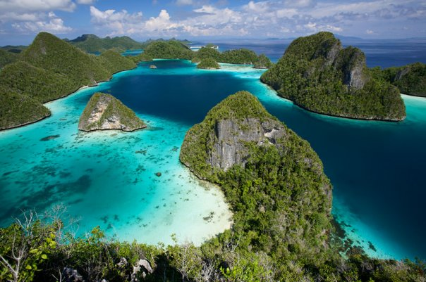
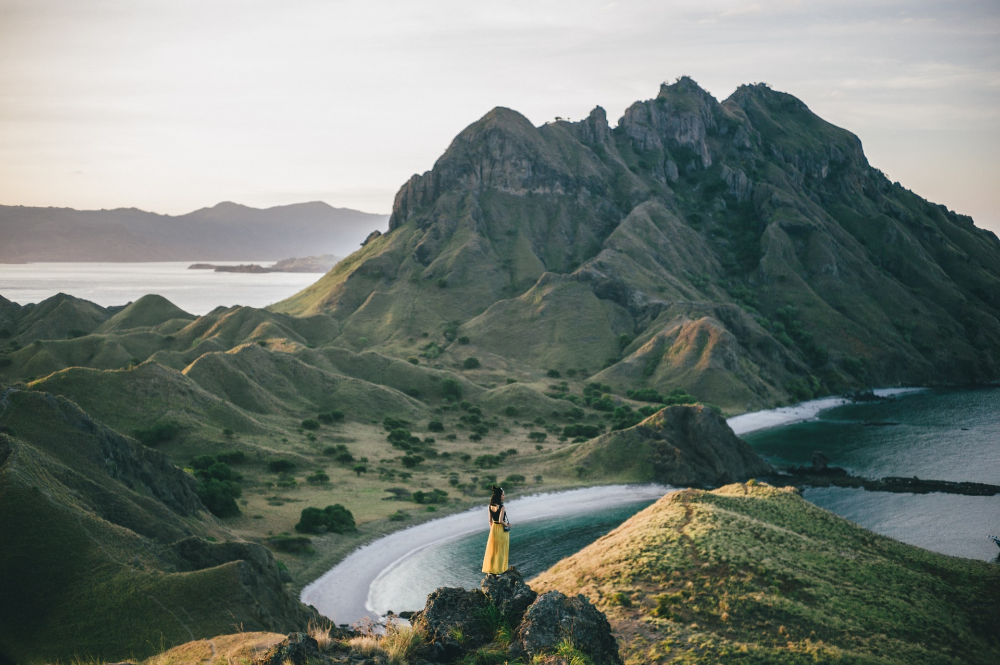
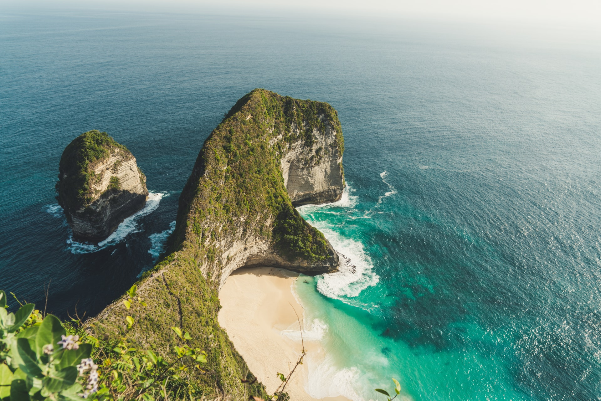
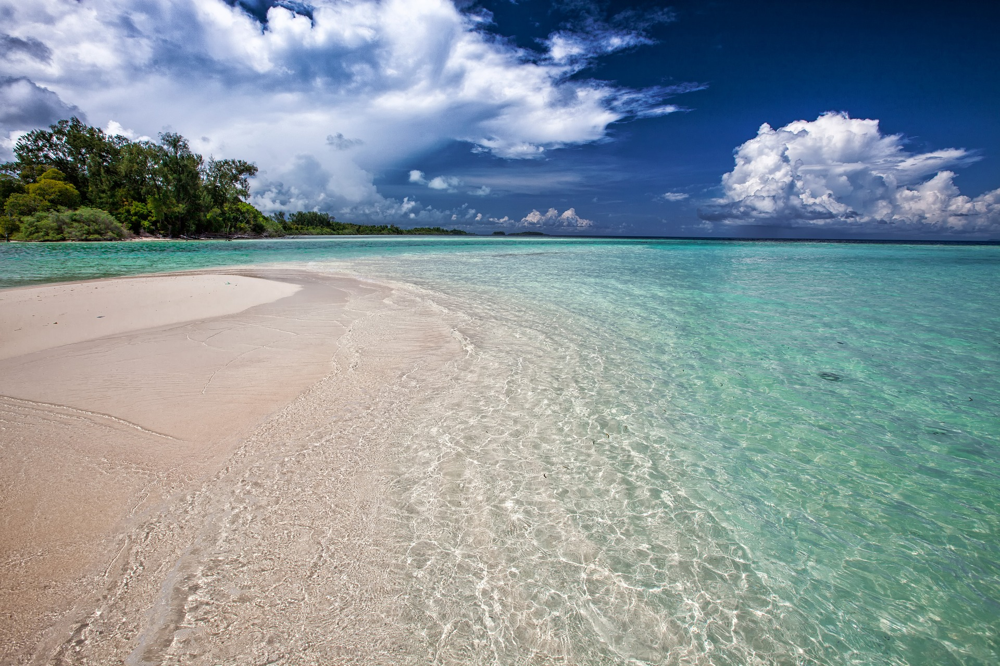
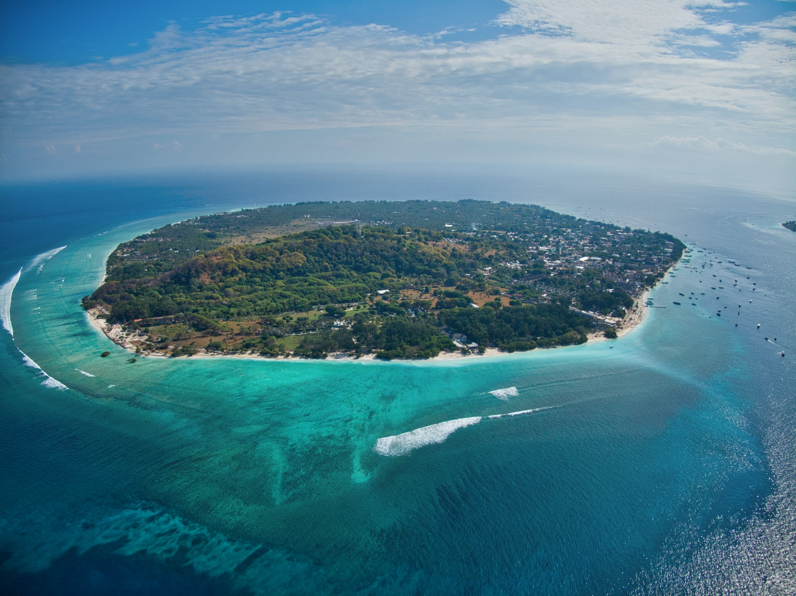
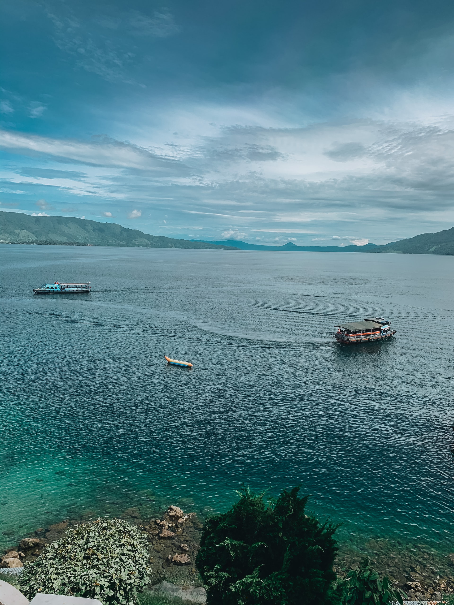

Berikut ini adalah rekomendasi destinasi pemandangan terbaik di Indonesia
|  | Raja AmpatPemandangan alam Raja Ampat menyajikan gugusan pulau yang asri dengan hamparan laut biru yang jernih. Raja Ampat terletak di Semenanjung Doberai atau dikenal sebagai Semenanjung Kepala Burung (Bird's Head Peninsula) di Provinsi Papua Barat. |
|  | Pulau PadarDaya tarik utama Pulau Padar adalah pemandangan alamnya. Terletak di Provinsi Nusa Tenggara Timur, pulau ini terdiri dari perbukitan yang membentang menghadap laut biru. Hal terbaik untuk dilakukan di sini adalah melihat panorama dari atas bukit. Pengunjung bisa mendaki bukit di Pulau Padar untuk menikmati hamparan alam dari atas. |
Pantai KelingkingPantai Kelingking terletak di Desa Bunga Mekar, sebelah barat daya Pulau Nusa Penida, Bali. Salah satu pemandangan alam yang paling populer disini adalah tanjung batu kapur yang ditumbuhi tanaman dengan ombak besar menerjangnya. |  |
Kepulauan WidiTerletak di Maluku Utara, Kepulauan Widi menawarkan pemandangan pasir putih dan laut biru yang memukau. Berbaring di pasir putih sambil menikmati birunya laut mungkin bisa melepask stred yang Anda rasakan. Jika beruntung, Anda bisa menyaksikan lumba-lumba melompat di atas air. |  |
Kepulauan GiliKepulauan Gili adalah terdiri dari tiga pulau, yaitu Gili Trawangan, Gili Meno dan Gili Air yang terletak di pesisir barat laut Lombok. Para perenang snorkel dapat mengagumi terumbu karang tropis yang indah. Dengan perairan hangat yang mengundang, berkunjung ke Kepulauan Gili dapat menjadi pengalaman yang tak terlupakan. |  |
Danau TobaDanau Toba menyajikan pesona alam yang sangat indah. Megahnya pegunungan di sekitar serta biru air danau menjadikan suasana sejuk dan damai. Untuk menikmati pemandangan alam Danau Toba, pengunjung dapat mendaki bukit sekitar untuk melihat secara utuh keindahan danau ini. |  |
| Nama | : | Muhammad Hafiz Akbar |
| NIM | : | 10122102 |
| Kelas | : | IF-3 |
| Fakultas | : | Teknik dan Ilmu Komputer |
| Prodi | : | Teknik Informatika |